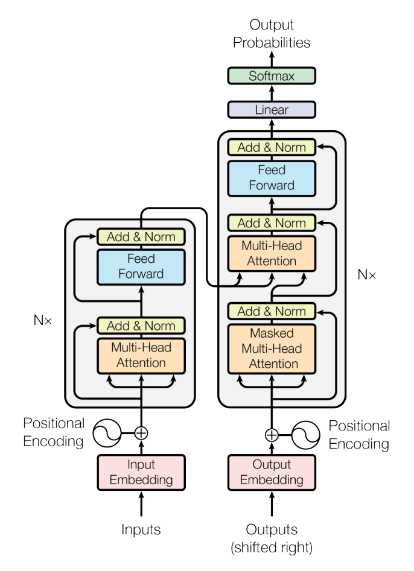

주의(attention)만으로 충분하다 — 순환·합성곱을 걷어낸 Transformer
한 줄 요약. 순환(RNN)과 합성곱(CNN)을 완전히 제거하고 self-attention만으로 인코더-디코더를 구성한 Transformer를 제안한다. 모든 위치 쌍을 상수 개수의 연산으로 직접 연결하므로 학습을 대규모로 병렬화할 수 있고, WMT 2014 영-독/영-불 번역에서 더 적은 학습 비용으로 당시 최고 성능(SOTA)을 갱신했다.
좋은 논문 읽기는 첫 페이지부터 수식에 뛰어드는 것이 아니다. Jacques Cornwell이 Nature 커리어 칼럼(2026)에서 정리한 방법은 맥락 → 정밀 검토 → 최종 판단의 3단계, 총 7스텝으로 진행된다. 먼저 큰 그림을 잡고(1~3단계), 방법론과 수식을 뜯어본 뒤(4~5단계), 마지막에 저자의 주장과 자신의 독립적 해석을 대조한다(6~7단계). 이 리포트의 각 절은 그 단계를 그대로 따르며, 매 단계마다 (a) 그 단계에서 독자가 무엇을 해야 하는지를 먼저 설명하고 (b) 이 논문에 실제로 적용한 결과를 보여준다. 숙련 연구자가 논문 한 편에 쓰는 1~2시간의 정독 과정을 이 문서가 대신 수행하고 그 과정을 보여준다.
| Phase | 단계 | 핵심 질문 |
|---|---|---|
| Phase 1 The Aerial View (맥락 잡기) | Step 1. 큰 그림 훑기 | 초록과 대표 그림만으로 연구 설계·도구·범위를 파악할 수 있는가? |
| Step 2. 핵심 연구 질문 찾기 | 이 논문이 검증하려는 구체적 가설은 무엇인가? | |
| Step 3. 지식의 공백 지도화 | 기존 접근의 한계는 무엇이고, 이 논문은 어디에 끼워지는가? | |
| Phase 2 The Interrogation (정밀 검토) | Step 4. 방법론 평가 | 실험 설계가 연구 질문에 부합하는가? (수식·구조·통제) |
| Step 5. 독립적 결론 도출 | 저자 해석을 가리고, 결과 자체는 무엇을 말하는가? | |
| Phase 3 The Verdict (최종 판단) | Step 6. 결론 대조 | 저자의 주장이 데이터를 넘어 과장되지는 않았는가? |
| Step 7. 대안적 설명 고려 | 결과를 설명할 다른 요인·교란변수·이해충돌은 없는가? |
이 절은 Cornwell의 7단계에는 없지만, 본문 수식을 스스로 판독하려면 먼저 채워야 하는 토대다. 아래 배경지식 사다리는 가장 원초적인 개념(벡터 내적)에서 시작해 이 논문의 표기(예: \( \mathrm{softmax}(QK^{\top}/\sqrt{d_k})V \))까지 의존 순서대로 쌓아 올린다. 각 칸은 개념 → 짧은 설명 → 실제 숫자 예시 → 이 개념이 논문의 어떤 기호·수식·주장을 여는가로 구성된다. 외부 지식은 참고문헌의 검증 프로토콜을 통과한 것만 실었다.
본문 §2(Background)는 "순차 계산을 줄이려는" 흐름을 세 갈래로 정리한다. 각 갈래의 한계가 곧 Transformer의 설계 동기다.
| 계보 | 대표 연구 | 남은 한계 |
|---|---|---|
| ① RNN seq2seq + attention | Sutskever et al. 2014 (seq2seq)[K2], Bahdanau et al. 2014 (additive attention)[K1], LSTM[K3] 기반 | 은닉상태 \(h_t\)가 \(h_{t-1}\)에 의존 → 시퀀스 길이에 비례하는 순차 연산 \(O(n)\), 학습 병렬화 불가. |
| ② CNN seq2seq | ByteNet[K6], ConvS2S[K4], Extended Neural GPU | 위치 병렬화는 되지만 두 위치를 잇는 경로 길이가 거리와 함께 증가(ConvS2S 선형, ByteNet 로그) → 먼 의존성 학습이 어려움. |
| ③ RNN 안의 self-attention / 메모리망 | structured attention, end-to-end memory networks 등 | self-attention을 쓰긴 하나 여전히 순환 구조와 결합 → 순차성 잔존. |
| → 이 논문 (Transformer) | 순수 self-attention 인코더-디코더 | 임의의 두 위치를 상수 개(\(O(1)\)) 연산으로 직접 연결. 순환·합성곱 없이 완전 병렬. 대규모 조건부 계산(MoE[K7])과 달리 구조 자체를 단순화. |
| 구분 | 초록의 진술(요지) |
|---|---|
| 배경 | 지배적 sequence transduction 모델은 인코더·디코더를 갖춘 복잡한 RNN 또는 CNN이며, 최고 성능 모델은 attention으로 둘을 잇는다. |
| 방법 | 순환과 합성곱을 완전히 배제하고 attention만에 기반한 단순 구조 Transformer를 제안한다. |
| 결과 | WMT 2014 영-독 28.4 BLEU(앙상블 포함 기존 최고보다 +2 이상), 영-불 단일모델 41.8 BLEU를 8 GPU·3.5일로 달성 — 학습 비용은 기존의 일부. |
| 의의 | 더 병렬화되고 학습이 빠르며, 영어 구문분석(constituency parsing)에도 잘 일반화된다. |

서론(§1) 마지막 문단이 이 논문의 명제를 사실상 선언한다:
"In this work we propose the Transformer, a model architecture eschewing recurrence and instead relying entirely on an attention mechanism to draw global dependencies between input and output. The Transformer allows for significantly more parallelization and can reach a new state of the art in translation quality ..."
번역. "순환을 배제하고 오직 attention만으로 입력과 출력 사이의 전역적 의존관계를 포착하는 구조 Transformer를 제안한다. 이는 훨씬 큰 병렬화를 가능케 하며 번역 품질의 새 SOTA에 도달할 수 있다."
쉬운 말 풀이 — 검증 대상 가설. 「순환·합성곱을 전부 없애고 self-attention만으로 sequence transduction 모델을 만들어도, (a) 번역 품질이 떨어지지 않고 오히려 SOTA를 넘으며, (b) 순차 의존이 사라져 학습이 훨씬 빨라진다.」 리포트의 나머지는 이 (a)·(b) 두 주장이 수식·구조·실험으로 실제로 뒷받침되는지를 추적한다.
공백은 명확하다. RNN 계열은 순차성 때문에 병렬화가 안 되고, CNN 계열은 두 위치를 잇는 경로 길이가 거리와 함께 늘어 장거리 의존이 어렵다. attention은 늘 RNN과 함께만 쓰였다. 남은 빈칸: "attention만으로, 순환 없이, 표현을 만들 수 있는가?" — Transformer가 그 조각이다(경로 길이 \(O(1)\)·완전 병렬, §4의 Table 1이 정량화).
(1) 임베딩 + 위치 부호화. 토큰을 \(d_{\text{model}}=512\) 벡터로 임베딩하고(값에 \(\sqrt{d_{\text{model}}}\)를 곱함), 순서 정보를 담은 positional encoding을 더한다. 순환이 없으므로 이 단계가 없으면 모델은 단어 순서를 전혀 알 수 없다. (2) 인코더 층 ×6. 각 층 = [multi-head self-attention] + [position-wise FFN], 두 서브층 각각에 residual과 LayerNorm(Add & Norm). (3) 디코더 층 ×6. 각 층 = [masked self-attention(미래 위치를 \(-\infty\)로 가려 자기회귀 유지)] + [encoder-decoder attention(query는 디코더, key·value는 인코더 출력)] + [FFN]. (4) 출력. 최상단 Linear로 어휘 크기 로짓을 내고 softmax로 확률화(임베딩 행렬과 가중치 공유).
논문의 번호 붙은 수식 3개와, 이해에 결정적인 무번호 수식 2개(MultiHead·Positional Encoding)를 각각 카드로 분석한다.
| 기호 | 종류 / 차원 | 의미 |
|---|---|---|
| \(Q\) | 행렬 \(\mathbb{R}^{n\times d_k}\) | query 묶음 — "무엇을 찾고 있나" |
| \(K\) | 행렬 \(\mathbb{R}^{m\times d_k}\) | key 묶음 — "각 위치가 내놓는 색인" |
| \(V\) | 행렬 \(\mathbb{R}^{m\times d_v}\) | value 묶음 — "실제로 가져올 내용" |
| \(QK^{\top}\) | 행렬 \(\mathbb{R}^{n\times m}\) | 모든 query-key 쌍의 내적(유사도) 점수 |
| \(d_k\) | 스칼라 | key/query 차원(본 논문 64) |
| \(\sqrt{d_k}\) | 스칼라 | 분산 정규화용 스케일 인자 |
| \(QK^{\top}\) | 각 query가 각 key와 얼마나 정렬됐는지 측정. 크면 "그 위치를 많이 보라"는 신호. 제거하면 어디를 볼지 결정하는 근거 자체가 사라진다. |
| \(/\sqrt{d_k}\) | \(d_k\)가 커질수록 내적 분산이 \(d_k\)로 부풀어 softmax가 포화(gradient 소실)된다. \(\sqrt{d_k}\)로 나눠 분산을 \(\approx1\)로 되돌린다. 없으면 큰 \(d_k\)에서 학습이 정체. |
| \(\mathrm{softmax}(\cdot)\) | 점수를 합 1의 가중치로 변환. 행마다 "각 value에 줄 비중"이 된다. |
| \(\cdots V\) | 가중치로 value를 가중합. 최종 출력 = 관련 위치 내용의 혼합. |
"질문(\(Q\))을 열쇠들(\(K\))에 대보고, 잘 맞는 서랍의 내용물(\(V\))을 그 정도에 비례해 꺼내 섞는다." 숫자로: query가 key₁·key₂와 내적 점수 \([8,0]\)(스케일 후 \([1,0]\))이라면 softmax는 \([0.73,0.27]\), 출력은 \(0.73v_1+0.27v_2\).
| 기호 | 종류 / 차원 | 의미 |
|---|---|---|
| \(h\) | 스칼라 | head 수(본 논문 8) |
| \(W_i^Q\) | 행렬 \(\mathbb{R}^{d_{\text{model}}\times d_k}\) | \(i\)번째 head의 query 투영 |
| \(W_i^K\) | 행렬 \(\mathbb{R}^{d_{\text{model}}\times d_k}\) | \(i\)번째 head의 key 투영 |
| \(W_i^V\) | 행렬 \(\mathbb{R}^{d_{\text{model}}\times d_v}\) | \(i\)번째 head의 value 투영 |
| \(W^O\) | 행렬 \(\mathbb{R}^{hd_v\times d_{\text{model}}}\) | concat 결과를 다시 \(d_{\text{model}}\)로 되돌리는 출력 투영 |
| \(\mathrm{head}_i\) | 행렬 \(\mathbb{R}^{n\times d_v}\) | \(i\)번째 부분공간에서의 attention 출력 |
| \(QW_i^Q,\ KW_i^K,\ VW_i^V\) | 같은 입력을 head마다 다른 학습된 각도로 투영. head별로 서로 다른 관계(문법·의미 등)를 보게 만든다. 투영이 없으면 모든 head가 같은 것만 본다. |
| \(\mathrm{Concat}(\cdots)\) | \(h\)개 head 출력(\(d_v=64\))을 이어붙여 \(hd_v=512\) 벡터로. 여러 부분공간 정보를 한데 모은다. |
| \(W^O\) | 모은 정보를 섞어 다시 \(d_{\text{model}}\) 차원으로. 이후 residual 덧셈과 shape을 맞춘다. |
한 명의 독자가 문장을 한 관점으로만 읽는 대신, 8명이 각자 다른 관점(주어-동사 일치, 대명사 지시, 인접어 등)으로 동시에 읽고 요약을 합치는 것. \(d_k=d_v=512/8=64\)로 줄였기에 8개를 합쳐도 계산량은 단일 full-dim attention과 비슷하다.
| 기호 | 종류 / 차원 | 의미 |
|---|---|---|
| \(x\) | 벡터 \(\mathbb{R}^{d_{\text{model}}}\) | 한 위치의 표현(512차원) |
| \(W_1,b_1\) | \(\mathbb{R}^{512\times2048},\ \mathbb{R}^{2048}\) | 확장 선형층(내부 차원 \(d_{ff}=2048\)) |
| \(W_2,b_2\) | \(\mathbb{R}^{2048\times512},\ \mathbb{R}^{512}\) | 축소 선형층(다시 512로) |
| \(\max(0,\cdot)\) | 함수(ReLU) | 음수를 0으로 자르는 비선형 |
| \(xW_1+b_1\) | 512→2048로 차원을 넓혀 더 풍부한 특징 공간으로 올린다. |
| \(\max(0,\cdot)\) | 비선형성을 주입 — 없으면 두 선형층이 하나로 합쳐져 표현력이 사라진다. |
| \(\cdots W_2+b_2\) | 2048→512로 되돌려 residual 덧셈과 다음 층에 shape을 맞춘다. |
attention이 "위치들 사이"에서 정보를 섞는다면, FFN은 각 위치를 독립적·동일하게 다시 가공한다(위치마다 같은 \(W_1,W_2\), 즉 커널 크기 1의 합성곱 2개). 위치 간 상호작용이 전혀 없다는 점이 attention과의 분업 지점.
| 기호 | 종류 | 의미 |
|---|---|---|
| \(pos\) | 정수 스칼라 | 시퀀스 내 위치(0,1,2,...) |
| \(i\) | 정수 스칼라 | 차원 인덱스(짝수는 sin, 홀수는 cos) |
| \(d_{\text{model}}\) | 스칼라 | 임베딩 차원(512) — PE도 같은 차원이라 더할 수 있음 |
| \(10000^{2i/d_{\text{model}}}\) | 스칼라 | 차원마다 달라지는 파장(주기) 조절항 |
| \(pos/10000^{2i/d_{\text{model}}}\) | 낮은 \(i\)는 짧은 파장(빠른 진동), 높은 \(i\)는 긴 파장(느린 진동). 파장이 \(2\pi\)~\(10000\cdot2\pi\)로 기하급수 배열되어 각 위치에 고유 패턴을 준다. |
| sin / cos 쌍 | 같은 주파수를 sin·cos 한 쌍으로 두면, 고정 오프셋 \(k\)에 대해 \(PE_{pos+k}\)를 \(PE_{pos}\)의 선형변환으로 표현할 수 있어 상대 위치를 쉽게 학습하게 한다. |
여러 속도로 도는 시곗바늘들의 각도 조합으로 "지금 몇 번째 위치인가"를 인코딩하는 것. 학습형 위치 임베딩과 성능이 거의 같았지만(Table 3 (E)), sinusoid는 학습 때보다 긴 시퀀스로 외삽할 수 있으리라는 기대로 채택했다.
| 기호 | 종류 | 의미 |
|---|---|---|
| \(step\_num\) | 정수 | 현재까지의 학습 스텝 수 |
| \(warmup\_steps\) | 정수(=4000) | 학습률을 선형으로 올리는 예열 구간 길이 |
| \(d_{\text{model}}\) | 스칼라(=512) | 모델 차원 — 전체 학습률의 스케일 결정 |
| \(step\_num\cdot warmup\_steps^{-1.5}\) | 예열 구간(\(step \lt warmup\))에서 지배 → 학습률이 스텝에 선형 증가. 초기 큰 학습률의 불안정을 피한다. |
| \(step\_num^{-0.5}\) | 예열 이후 지배 → 학습률이 스텝의 역제곱근으로 감소. 후반 미세조정. |
| \(\min(\cdot,\cdot)\) | 두 국면을 자동 전환. 교차점이 정확히 \(step=warmup\_steps\). |
| \(d_{\text{model}}^{-0.5}\) | 큰 모델일수록 학습률을 낮춰 전체 스케일을 맞춘다. |
"천천히 데운 뒤 서서히 식힌다." \(warmup=4000\)에서 학습률이 정점을 찍고 이후 완만히 줄어든다. Adam[K8](\(\beta_1{=}0.9,\beta_2{=}0.98,\epsilon{=}10^{-9}\))과 함께 쓴다.
§4는 self-attention을 택한 이유를 세 척도로 정량화한다. 표기: \(n\)=시퀀스 길이, \(d\)=표현 차원, \(k\)=합성곱 커널, \(r\)=제한 attention 이웃 크기.
| 층 종류 | 층당 복잡도 | 순차 연산 | 최대 경로 길이 |
|---|---|---|---|
| Self-Attention | \(O(n^2\cdot d)\) | \(O(1)\) | \(O(1)\) |
| Recurrent | \(O(n\cdot d^2)\) | \(O(n)\) | \(O(n)\) |
| Convolutional | \(O(k\cdot n\cdot d^2)\) | \(O(1)\) | \(O(\log_k n)\) |
| Self-Attention (restricted) | \(O(r\cdot n\cdot d)\) | \(O(1)\) | \(O(n/r)\) |
논문 Table 1을 재조판. 값은 원문과 셀 단위 대조 완료.
핵심: self-attention은 순차 연산 \(O(1)\)·경로 길이 \(O(1)\) — 두 위치가 얼마나 멀든 한 번에 연결된다(RNN은 둘 다 \(O(n)\)). 층당 복잡도는 \(n \lt d\)일 때(문장 번역의 흔한 경우) 오히려 RNN보다 싸다. 이것이 연구 질문 (b) "학습이 빨라진다"의 이론적 근거다.
| 점검 항목 | 이 논문의 상태 | 평가 |
|---|---|---|
| 도구·데이터 적절성 | WMT 2014 EN-DE(약 4.5M 문장쌍)·EN-FR(36M), byte-pair/word-piece 인코딩 — 분야 표준 벤치마크. | 적절 ✓ |
| 표본·반복(seed) 수 | 번역 최종 수치는 대체로 단일 학습+체크포인트 평균. seed 간 분산·신뢰구간 미보고. | 약점 |
| 음성 통제 = baseline | Table 2에 ByteNet·ConvS2S·GNMT·MoE 등 동시대 최강 모델 다수 비교. | 충실 ✓ |
| 양성 통제 = ablation | Table 3에서 head 수·\(d_k\)·모델 크기·dropout·위치부호화를 체계적으로 변주. | 충실 ✓ |
| 데이터 공개 | WMT 2014는 공개 표준 데이터셋. | 공개 ✓ |
| 코드 공개 | tensorflow/tensor2tensor로 학습·평가 코드 공개. | 공개 ✓ |
| Model | BLEU EN-DE | BLEU EN-FR | 학습 비용(FLOPs) EN-DE | EN-FR |
|---|---|---|---|---|
| ByteNet | 23.75 | — | — | — |
| GNMT + RL | 24.6 | 39.92 | \(2.3\cdot10^{19}\) | \(1.4\cdot10^{20}\) |
| ConvS2S | 25.16 | 40.46 | \(9.6\cdot10^{18}\) | \(1.5\cdot10^{20}\) |
| MoE | 26.03 | 40.56 | \(2.0\cdot10^{19}\) | \(1.2\cdot10^{20}\) |
| GNMT + RL Ensemble | 26.30 | 41.16 | \(1.8\cdot10^{20}\) | \(1.1\cdot10^{21}\) |
| ConvS2S Ensemble | 26.36 | 41.29 | \(7.7\cdot10^{19}\) | \(1.2\cdot10^{21}\) |
| Transformer (base) | 27.3 | 38.1 | \(3.3\cdot10^{18}\) | \(3.3\cdot10^{18}\) |
| Transformer (big) | 28.4 | 41.8 | \(2.3\cdot10^{19}\) | \(2.3\cdot10^{19}\) |
논문 Table 2(WMT 2014 newstest2014)를 재조판. 값은 원문과 셀 단위 대조 완료. Deep-Att+PosUnk 행(EN-FR 전용)은 지면상 생략 — 단일 39.2 / 앙상블 40.4.
숫자 자체가 말하는 것. Transformer (big)의 EN-DE 28.4는 표의 모든 단일·앙상블 모델보다 높다. EN-FR 41.8도 단일모델 최고. 학습 비용은 Transformer (base) \(3.3\times10^{18}\) FLOPs로, ConvS2S·GNMT 등(\(10^{19}\)~\(10^{21}\))보다 1~3자릿수 작다. 즉 "더 높은 BLEU를 더 싼 비용에"가 표 하나로 성립.
이 데이터만으로 말할 수 없는 것. BLEU가 실제 번역 품질(유창성·의미보존)과 얼마나 일치하는지는 이 표가 말하지 않는다. FLOPs는 추정치(GPU 최대 성능×시간)라 실측 벽시계 시간과 다를 수 있다. 두 언어쌍은 모두 고자원이라 저자원 언어로의 일반화는 알 수 없다.
스스로 물어볼 질문. ① 이득이 구조 때문인가, 아니면 더 큰 배치·label smoothing·체크포인트 평균 같은 학습 기법 때문인가? ② EN-FR base가 38.1로 일부 앙상블보다 낮은데, "SOTA"는 어느 설정에서 성립하나? ③ 비용이 정말 공정 비교인가(하드웨어·정밀도 가정)?
| 변주 | 바꾼 것 (base: \(N{=}6\), \(d_{\text{model}}{=}512\), \(h{=}8\), \(P_{drop}{=}0.1\)) | PPL (dev) | BLEU (dev) |
|---|---|---|---|
| base | — | 4.92 | 25.8 |
| (A) | head 1개(\(d_k{=}512\)) | 5.29 | 24.9 |
| head 32개(\(d_k{=}16\)) | 5.01 | 25.4 | |
| (B) | \(d_k\)를 16으로 축소 | 5.16 | 25.1 |
| (C) | 모델 확대(\(d_{\text{model}}{=}1024\), \(d_{ff}{=}4096\)) | 4.66~5.12 | 25.4~26.2 |
| (D) | dropout 0.0 | 5.77 | 24.6 |
| dropout 0.2 | 4.95 | 25.5 | |
| (E) | sinusoid 대신 학습형 positional embedding | 4.92 | 25.7 |
| big | \(N{=}6\), \(d_{\text{model}}{=}1024\), \(h{=}16\), \(P_{drop}{=}0.3\), 300K steps | 4.33 | 26.4 |
논문 Table 3(EN-DE newstest2013 dev)의 축약 재조판 — 대표 행만 발췌, 값은 원문과 셀 단위 대조 완료. 전체 변주는 원문 Table 3 참조.
숫자 자체가 말하는 것. (A) head 1개(24.9)는 8개(25.8)보다 낮고, 너무 많아도(32개, 25.4) 떨어진다 → 중간이 최적. (B) \(d_k\)를 16으로 줄이면 25.1로 하락 → key 차원이 품질에 중요. (C) 모델을 키우면 대체로 개선. (D) dropout 0.0은 24.6으로 과적합, 0.2가 낫다. (E) 학습형 위치 임베딩(25.7)은 sinusoid(25.8)와 사실상 동률.
이 데이터만으로 말할 수 없는 것. 모두 dev set(newstest2013) 단일 실행 수치라 미세한 차(0.1~0.4 BLEU)가 통계적으로 유의한지 불명. 한 언어쌍에서의 경향이 다른 과제에도 유지되는지 알 수 없다.
스스로 물어볼 질문. ① 0.9 BLEU 같은 차이를 "중요"라 부르려면 몇 번 반복이 필요한가? ② (E)에서 두 위치부호화가 동률이라면 sinusoid 채택의 근거는 성능이 아니라 무엇인가(외삽 가능성)? ③ 어떤 요소가 가장 큰 지렛대인가(head vs 크기 vs dropout)?

이 논문을 처음 읽는 독자가 실제로 되읽게 되는 지점들이다. 각각 오해 → 왜 그렇게 읽히는가 → 해소 순으로 정리한다.
일치하는 지점(공정한 평가). 연구 질문 (a)·(b)는 데이터로 잘 뒷받침된다. Table 2가 "더 높은 BLEU + 더 낮은 FLOPs"를, Table 1이 "\(O(1)\) 순차 연산·경로 길이"를 각각 보이므로, "순환 없이 attention만으로 SOTA와 빠른 학습"이라는 핵심 주장은 과장이 아니다. ablation(Table 3)도 각 구성요소의 기여를 성실히 통제한다.
지적할 지점.
| 범주 | 내용 |
|---|---|
| 교란변수 | 성능 향상이 순수하게 self-attention 구조 덕인지, 아니면 큰 배치(≈25k 토큰)·label smoothing(\(\epsilon_{ls}{=}0.1\))[K10]·체크포인트 평균·warmup 스케줄 같은 학습 레시피 덕인지 완전히 분리되지 않는다. Table 3가 구조 변주는 통제하지만 이 레시피 요소들은 대부분 고정된 채다. |
| 평가지표 의존 | 결론이 BLEU 하나에 의존. 인간 평가·다른 지표가 같은 순위를 줄지는 미확인. |
| 저자가 인정한 한계 | 긴 시퀀스에서 \(O(n^2)\) attention 비용 → "제한된(local) attention" 후속 연구를 예고. 텍스트 외 이미지·오디오·비디오로의 확장, 생성의 비순차화도 future work로 남김. |
| 인정하지 않은 한계 | seed 분산/유의성 미보고, 고자원 언어쌍에 한정된 검증, \(O(n^2)\) 메모리가 실제 배포에서 갖는 제약의 정량화 부재. |
| 이해충돌·자금 | 8인 중 7인이 Google(Brain/Research) 소속이고 공개 코드도 Google의 tensor2tensor다. 별도 자금·이해충돌 명시는 없다. 벤치마크·비용 추정이 자사 인프라 기준이라는 점은 감안해서 읽어야 한다. |
핵심 기여(3~4문장 재구성). Transformer는 sequence transduction에서 순환과 합성곱을 완전히 제거하고, 임의의 두 위치를 상수 개 연산으로 잇는 self-attention만으로 인코더-디코더를 구성한 최초의 모델이다. scaled dot-product attention을 여러 head로 병렬화(multi-head)하고, 위치 정보를 sinusoidal encoding으로 주입하며, 각 위치를 FFN으로 가공하고 residual·LayerNorm으로 안정화한다. 그 결과 학습을 대규모로 병렬화하면서 WMT 2014 영-독(28.4)·영-불(41.8) 번역에서 더 적은 비용으로 SOTA를 갱신했고, 구문분석에도 잘 일반화됐다. 이 단순하면서 병렬적인 구조는 이후 사실상 모든 대규모 언어·비전 모델의 뼈대가 된다.
본문 숫자 예시들의 재현 코드다(필요 패키지: numpy). 복사해 실행하면 같은 출력이 나와야 한다. ✓ 네 스니펫 모두 생성 시점에 기계 검산 통과.
import numpy as np
scores = np.array([8.0, 0.0]) # query·key 내적 점수
scaled = scores / np.sqrt(64) # d_k = 64 → ÷8
w = np.exp(scaled) / np.exp(scaled).sum() # softmax
print(np.round(w, 2))[0.73 0.27]
import numpy as np
z = np.array([2.0, 1.0, 0.0])
w = np.exp(z) / np.exp(z).sum()
print(np.round(w, 3), round(w.sum(), 3)) # 가중치와 합(=1)[0.665 0.245 0.09 ] 1.0
import numpy as np
rng = np.random.default_rng(0) # 고정 seed → 재현 가능
q, k = rng.standard_normal((2, 100000, 64))
dots = (q * k).sum(axis=1) # 10만 쌍의 d_k=64 내적
print(round(dots.std(), 1), round((dots / np.sqrt(64)).std(), 2))8.0 1.0
import numpy as np
x = np.array([2.0, 4.0, 6.0])
ln = (x - x.mean()) / x.std()
print(np.round(ln, 2))[-1.22 0. 1.22]
| 용어 | 뜻 |
|---|---|
| BLEU | 기계번역 품질을 참조 번역과의 n-gram 일치로 재는 자동 지표(높을수록 좋음). |
| BPE / word-piece | 단어를 잦은 부분단위로 쪼개 희귀어·미등록어를 다루는 서브워드 토크나이저. |
| encoder-decoder attention | 디코더가 query, 인코더 출력이 key·value인 attention. 입력을 참조해 출력을 생성. |
| FFN (position-wise) | 각 위치에 동일하게 적용되는 2층 완전연결망(Eq. 2), 위치 간 상호작용 없음. |
| LayerNorm | 한 샘플 내 특징들의 평균·분산을 정규화해 학습을 안정화(Add & Norm의 Norm). |
| masked self-attention | 미래 위치를 \(-\infty\)로 가려 자기회귀 생성을 보존하는 디코더의 self-attention. |
| multi-head attention | attention을 서로 다른 투영으로 \(h\)번 병렬 수행 후 합치는 구조(MultiHead 식). |
| positional encoding | 순환이 없는 모델에 순서 정보를 넣는 sinusoidal 벡터(§3.5). |
| residual connection | \(x+\mathrm{Sublayer}(x)\)로 입력을 출력에 더해 깊은 망 학습을 돕는 연결. |
| scaled dot-product attention | \(\mathrm{softmax}(QK^{\top}/\sqrt{d_k})V\). Transformer attention의 기본 단위(Eq. 1). |
| self-attention | 한 시퀀스 내 서로 다른 위치들을 관계지어 그 시퀀스의 표현을 만드는 attention. |
| sequence transduction | 한 시퀀스를 다른 시퀀스로 변환하는 과제(번역·요약 등). |
| warmup | 학습 초반 학습률을 선형으로 올렸다가 이후 낮추는 스케줄(Eq. 3). |
대상 논문. A. Vaswani, N. Shazeer, N. Parmar, J. Uszkoreit, L. Jones, A. N. Gomez, Ł. Kaiser, I. Polosukhin. "Attention Is All You Need." NIPS 2017. arXiv:1706.03762. https://arxiv.org/abs/1706.03762
아래 [K#]는 배경지식·관련연구용 외부 출처다. 모두 arXiv 초록/공식 페이지와 직접 대조해 검증했다(확인일 2026-07-06; [K3]은 출판사 초록이 403이라 서지만 확인). ✓ Verified
| ID | 출처 (제목 · 저자 · 연도 · URL) | 상태 |
|---|---|---|
| [K1] | Neural Machine Translation by Jointly Learning to Align and Translate — Bahdanau, Cho, Bengio, 2014. arXiv:1409.0473. 링크 | ✓ |
| [K2] | Sequence to Sequence Learning with Neural Networks — Sutskever, Vinyals, Le, 2014 (NIPS). arXiv:1409.3215. 링크 | ✓ |
| [K3] | Long Short-Term Memory — Hochreiter, Schmidhuber, 1997. Neural Computation 9(8):1735—1780. 링크 | ✓ 서지 확인 |
| [K4] | Convolutional Sequence to Sequence Learning — Gehring, Auli, Grangier, Yarats, Dauphin, 2017. arXiv:1705.03122. 링크 | ✓ |
| [K5] | Layer Normalization — Ba, Kiros, Hinton, 2016. arXiv:1607.06450. 링크 | ✓ |
| [K6] | Neural Machine Translation in Linear Time (ByteNet) — Kalchbrenner et al., 2016. arXiv:1610.10099. 링크 | ✓ |
| [K7] | Outrageously Large Neural Networks: The Sparsely-Gated Mixture-of-Experts Layer — Shazeer et al., 2017. arXiv:1701.06538. 링크 | ✓ |
| [K8] | Adam: A Method for Stochastic Optimization — Kingma, Ba, 2014 (ICLR 2015). arXiv:1412.6980. 링크 | ✓ |
| [K9] | Google's Neural Machine Translation System (GNMT) — Wu, Schuster, Chen et al., 2016. arXiv:1609.08144. 링크 | ✓ |
| [K10] | Rethinking the Inception Architecture for Computer Vision (label smoothing) — Szegedy et al., 2015 (CVPR 2016). arXiv:1512.00567. 링크 | ✓ |
| [K11] | Deep Residual Learning for Image Recognition — He, Zhang, Ren, Sun, 2015 (CVPR 2016). arXiv:1512.03385. 링크 | ✓ |